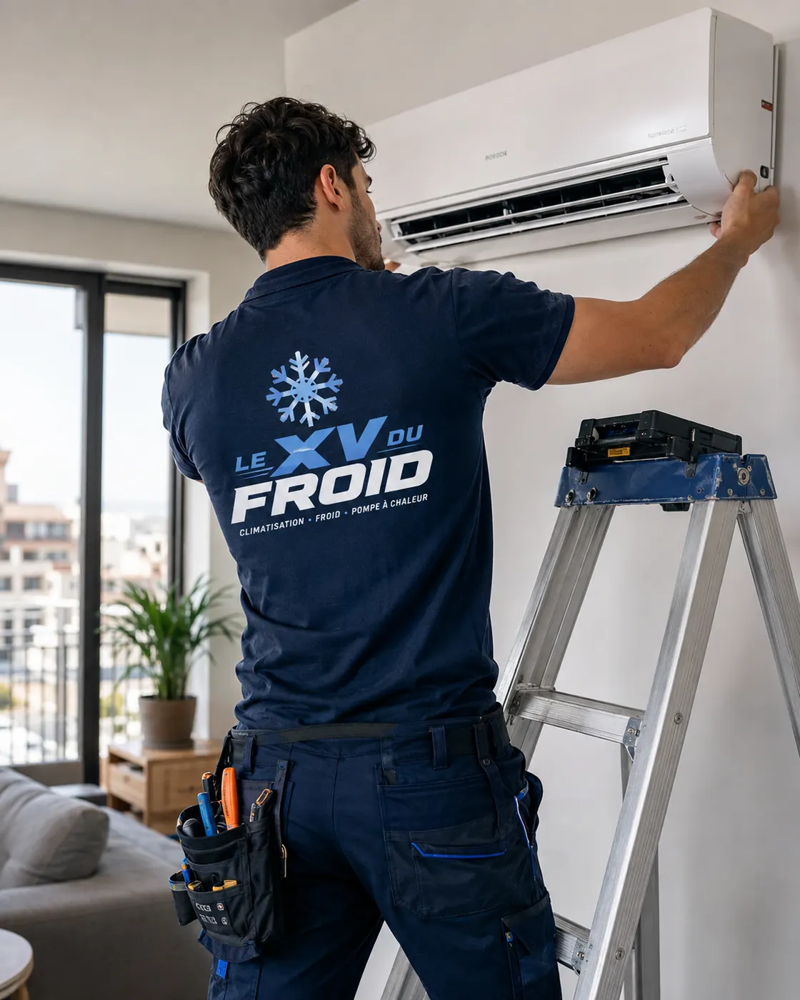

Viroflay · 78220 · clim récente en panne
Urgence climatisation Viroflay : l’appareil date de l’été dernier et il s’arrête déjà.
Une clim neuve qui lâche en pleine chaleur, c’est agaçant et on se demande tout de suite qui doit payer. À Viroflay comme ailleurs, la bonne réaction tient en quelques gestes, et en un ordre d’appels qu’il vaut mieux respecter.
- Gestes sûrs avant l’arrivée
- Qui appeler : installateur ou constructeur
- Nous faisons au plus vite

Panne récente
Ne rien démonter, tout noter.
Quand un appareil récent tombe en panne, la tentation est de tout tester soi-même : redémarrer dix fois, changer les piles, débrancher. Évitez : certains défauts se voient sur l’afficheur, et un redémarrage répété fait perdre le code qui aide au diagnostic.
Notez le code d’erreur, la marque, le modèle (étiquette sur le côté de l’unité), la date d’installation et le nom de l’installateur. Gardez la facture et le bon de mise en service.
Avec ces cinq informations, une urgence climatisation Viroflay se règle plus vite : nous savons ce qu’il faut apporter et à qui s’adresser si l’appareil est encore sous garantie.
Avant l’arrivée
Les gestes sûrs, dans l’ordre
Aucun ne demande d’outil ni d’ouvrir quoi que ce soit.
- Couper l’appareil : télécommande d’abord, puis disjoncteur dédié s’il y en a un.
- Photographier l’afficheur : voyant clignotant ou code, avant de tout éteindre.
- Regarder l’unité extérieure : ventilateur à l’arrêt, glace, bruit anormal, odeur de brûlé.
- Épargner la pièce : fermer les volets, ouvrir une fenêtre le soir, éviter les pièces closes en plein soleil.
- Rassembler les papiers : facture, attestation de pose, numéro de série.
Garantie
Qui répond d’une clim récente ?
Deux garanties coexistent en général : celle du constructeur sur l’appareil, et celle de l’installateur sur la pose. Si la panne vient d’un défaut de fabrication, la première joue. Si elle vient d’un tuyau mal posé ou d’une évacuation mal inclinée, c’est la seconde.
Nous ne tranchons pas à l’aveugle. Nous regardons, nous disons ce que nous voyons, et nous le consignons par écrit pour que vous puissiez le transmettre à l’installateur ou au constructeur.
Un dépannage engagé sans l’accord du vendeur peut, selon le contrat, faire perdre une garantie : il vaut mieux le prévenir avant.
Lisez votre contrat de pose : certains installateurs exigent d’être prévenus avant toute intervention d’un tiers.
Panne et canicule
Faut-il courir quand il fait chaud ?
Une clim en panne un jour de forte chaleur n’est pas toujours une urgence au sens strict. Un logement qui reste supportable, avec des volets fermés et des fenêtres ouvertes la nuit, laisse le temps de bien faire.
Cela change pour une personne fragile, un bébé ou un local qui abrite du matériel sensible. Dites-le dès l’appel, nous en tenons compte pour l’ordre des passages.
Pour toute demande, nous faisons au plus vite. Appelez le matin pour un créneau rapide ; nous vous donnons le moment réaliste, sans le promettre à l’avance.

Ce qu’on trouve le plus souvent sur une clim neuve
Sur un appareil récent, les causes sont presque toujours les mêmes : une évacuation mal inclinée, une alimentation mal dimensionnée, un défaut de mise en service ou une carte qui flanche.
Nous contrôlons d’abord l’alimentation et les sécurités, puis la pression du circuit et le fonctionnement de la carte. Rien n’est démonté tant que la cause n’est pas claire.
- Alimentation et protections
- Pression du circuit
- Carte, sondes, afficheur
Et ensuite
Comment se passe l’intervention
À l’arrivée, nous regardons l’installation avec vous, nous testons, puis nous annonçons ce qui est en cause. Si une pièce est sous garantie, nous vous aidons à constituer le dossier.
Le devis vous est remis par écrit avant toute réparation payante. S’il faut commander une pièce, nous disons le délai honnête que nous donne le fournisseur.
Pour un depannage climatisation urgence Viroflay, nous restons sobres : on répare ce qui est à réparer, sans refaire ce qui marche.
Questions
Clim récente en panne à Viroflay
Ma clim a moins d’un an, l’intervention est-elle prise en charge ?
Cela dépend de la cause et de la garantie. Nous établissons un constat par écrit pour que vous puissiez le soumettre à l’installateur ou au constructeur.
Pouvez-vous intervenir si la clim a été posée par un autre ?
Oui. Nous prévenons seulement qu’un contrat de garantie peut demander de contacter l’installateur d’abord. Mieux vaut vérifier avant.
Est-ce une urgence climatisation Viroflay si le logement est supportable ?
Pas au sens strict. Si les volets tiennent la chaleur, on peut planifier. Mais dites-le-nous : nous tenons compte de la situation de chacun.
Mon appareil affiche un code, dois-je le noter ?
Oui, avec une photo. Le code, la marque et le modèle nous permettent de savoir quelles pièces apporter.
Puis-je relancer la clim après une coupure de courant ?
Une fois, après quelques minutes d’attente. Si elle s’arrête de nouveau, laissez-la éteinte et appelez.
Promettez-vous une heure d’arrivée précise ?
Non, nous ne promettons pas de délai. Nous faisons au plus vite et, en appelant le matin, vous avez de meilleures chances d’obtenir un créneau rapide.
Dans votre ville
Les autres services à Viroflay
Un besoin différent, une page différente : dépannage, entretien, installation ou urgence.
Autour de chez vous
Urgence de climatisation dans les villes voisines
Si vous êtes à la limite de deux communes, lisez aussi la page d’à côté.
- Urgence climatisation Vélizy-Villacoublay : local professionnel en panne, par où commencer
- Urgence climatisation Versailles : panne en pleine chaleur, les premiers gestes
- Urgence climatisation Guyancourt : panne en copropriété, accès et gardien
- Urgence climatisation Le Chesnay-Rocquencourt : en vague de chaleur, ce qui est faisable
- Urgence climatisation La Celle-Saint-Cloud : pourquoi le devis passe avant le tournevis
- Urgence climatisation Saint-Cyr-l’École : ce qu’il faut savoir avant de croire une promesse
- Urgence climatisation Bougival : panne en pleine chaleur, premiers gestes et personnes fragiles
- Urgence climatisation Fontenay-le-Fleury : salle de sport ou atelier à domicile en pleine chaleur
- Urgence climatisation Bois-d’Arcy : la clim lâche au milieu d’une nuit chaude
À côté
D’autres besoins dans les communes voisines
Chaque ville a ses pages.
Nos services
Aller plus loin sur la climatisation
Les pages du site qui complètent celle-ci : services, guides pratiques et devis.
- Dépannage climatisation en Île-de-France
- Installation de climatisation : split, gainable, monobloc
- Entretien de climatisation et de clim réversible
- Demander un devis climatisation gratuit
- Toutes nos zones d’intervention
- Ma climatisation ne refroidit plus : que faire ?
- Climatisation en appartement : règles et solutions
Où on intervient
Viroflay et les communes autour
Le quartier de la gare Rive Droite, celui de la gare Rive Gauche, les lotissements des coteaux, ainsi que Versailles, Vélizy-Villacoublay et Le Chesnay-Rocquencourt.
Demander une intervention à ViroflayÀ lire aussi
Autour de Viroflay
Pages voisines : urgence Versailles, urgence Vélizy-Villacoublay, urgence Le Chesnay-Rocquencourt.
Transparence
Un devis clair avant toute intervention.
Vous savez ce qui est prévu, pourquoi c’est nécessaire et à quel tarif avant que le technicien commence. Puis contrôles et essais avant son départ.